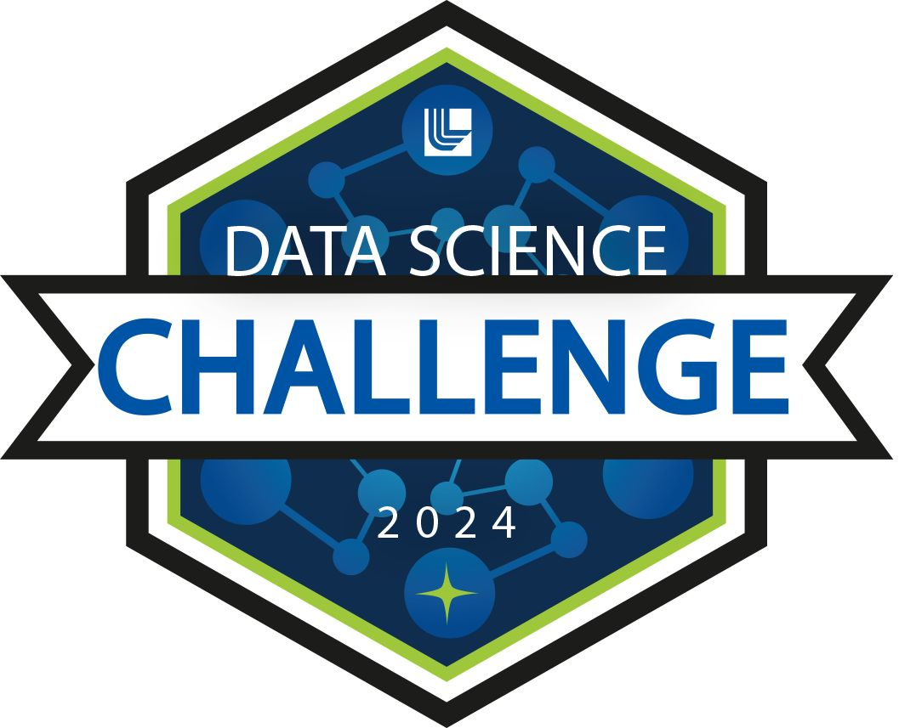
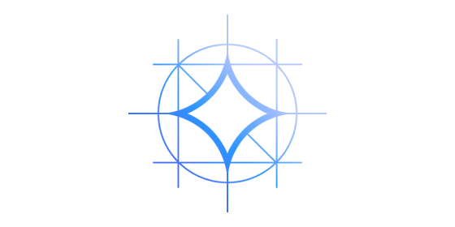
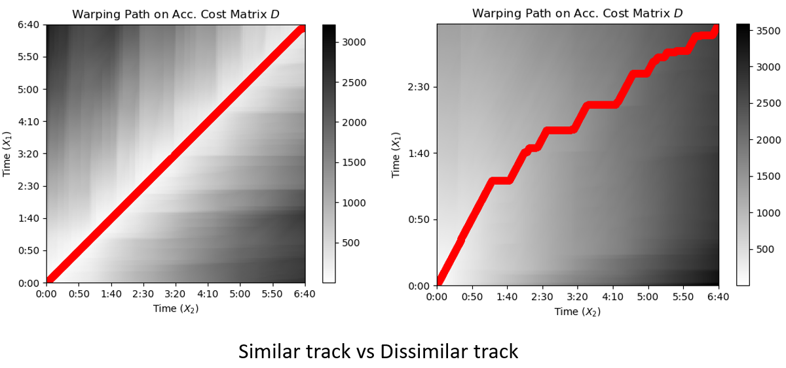
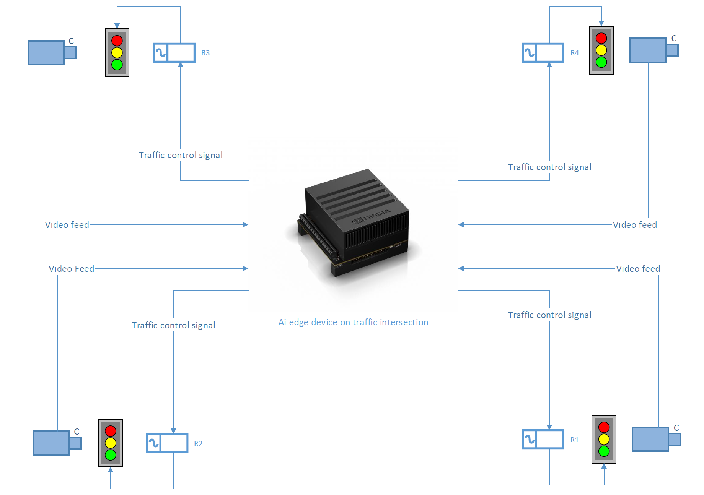

Machine learning for high-stakes systems.
I build ML/DL systems for high-stakes, real-world problems. Most recently at Kaiser Permanente's Division of Research, building cardiovascular imaging models at scale. MS in EECS from UC Merced; former backend engineer at TCS.
I'm a machine learning engineer with a software-engineering backbone, drawn to problems where the model is only half the work - where running it reliably, at scale, and within real latency budgets matters as much as the architecture. I've worked on cardiovascular imaging at Kaiser Permanente, robotics and computer architecture at UC Merced's MoCA Lab, and payment systems at Tata Consultancy Services. I hold an MS in Electrical Engineering & Computer Science from UC Merced.
- Built ML workflows for cardiovascular imaging - echocardiogram measurement models & coronary artery calcium (CAC) CT segmentation pipelines.
- Trained a DeepLabV3+ model for echo E/A-ratio measurement, cutting MAE from 0.341 to 0.216 and failure cases from 9% to 3%.
- Scaled a CAC segmentation inference pipeline to ~1.5M DICOM CT scans; optimized with multiprocessing & multi-GPU to take per-series inference from 260s to 15s.
- Developed a mobile robotic platform on the AgileX SCOUT UGV to help forest crews reduce wood waste and prevent wildfires.
- Fine-tuned ENet & SegFormer semantic-segmentation models for path traversability (mIoU 0.729 / 0.68 - 23% & 15% over baseline).
- Deployed ENet on an NVIDIA Orin AGX for real-time inference at 25ms/frame.
- Built validation routines for Direct Debit & Credit Transfer payment channels per FPS and HKICL specs, processing up to 100k transactions/min.
- Designed a Spring REST client integration with the BPay API, improving real-time bill payment processing by 35%.
- Led 3 SDETs to ship a Spring Boot API testing pipeline across 3 regions, increasing code delivery speed 20%.



